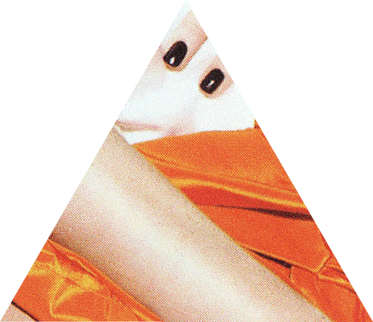
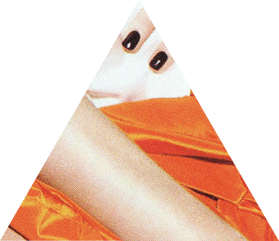

Story Of King Shahryar and His Brother
Tale of the Bull and the Ass (Told by the Vizier)
Tale of the Trader and the Jinni
The First Shaykh’s Story (2)
The Second Shaykh’s Story
The Third Shaykh’s Story (3)
The Fisherman and the Jinni (4)
Tale of the Vizier and the Sage Duban (5)
Story of King Sindibad and His Falcon
Tale of the Husband and the Parrot
Tale of the Prince and the Ogress
Tale of the Ensorcelled Prince (8)
The Porter and the Three Ladies of Baghdad (10)(11)
The First Kalandar’s Tale (12)
The Second Kalandar’s Tale (13)
Tale of the Envier and the Envied (14)
The Third Kalandar’s Tale (15)(16)(17)
The Eldest Lady’s Tale (18)
Tale of the Portress (19)
Conclusion of the Story of the Porter and the Three Ladies
The Tale of the Three Apples (20)
Tale of Núr al-Dín Alí and his Son (21)(22)(23)(24)
The Hunchback’s Tale (25)
The Nazarene Broker’s Story (26)
The Reeve’s Tale (28)
Tale of the Jewish Doctor (29)
Tale of the Tailor (30)(31)
The Barber’s Tale of Himself
The Barber’s Tale of his First Brother
The Barber’s Tale of his Second Brother (32)
The Barber’s Tale of his Third Brother
The Barber’s Tale of his Fourth Brother
The Barber’s Tale of his Fifth Brother (33)
The Barber’s Tale of his Sixth Brother
The End of the Tailor’s Tale (34)
The Tale of King Omar Bin al-Nu’uman and His Sons Sharrkan and Zau al-Makan (cont’d)
Tale of Tàj al-Mulúk and the Princess Dunyà: The Lover and the Loved
Continuation of the Tale of Aziz and Azizah
[Tale of Táj al-Mulák and the Princess Dunyá]
[The Tale of King Omar Bin al-Nu’uman and His Sons Sharrkan and Zau al-Makan] of the Hashish Eater (143)
[The Tale of King Omar Bin al-Nu’uman and His Sons Sharrkan and Zau al-Makan] (resumed)
Tale of Hammad the Badawi (144)
[The Tale of King Omar Bin al-Nu’uman and His Sons Sharrkan and Zau al-Makan] (resumed to end) (145)
The Birds and Beasts and the Carpenter (146)
The Hermits (148)
The Water-Fowl and the Tortoise
The Wolf and the Fox (149)
Tale of the Falcon and the Partridge (150)
The Mouse and the Ichneumon
The Cat and the Crow
The Fox and the Crow
The Flea and the Mouse (151)
The Saker and the Birds (152)
The Sparrow and the Eagle
The Hedgehog and the Wood Pigeons
The Merchant and the Two Sharpers
The Thief and His Monkey
The Foolish Weaver
The Sparrow and the Peacock
Tale of Ali bin Bakkar and Shams al-Nahar
Tale of Kamar al-Zaman (171)
 


 the enchanted horse
tale of the three apples
the enchanted horse
tale of the three apples